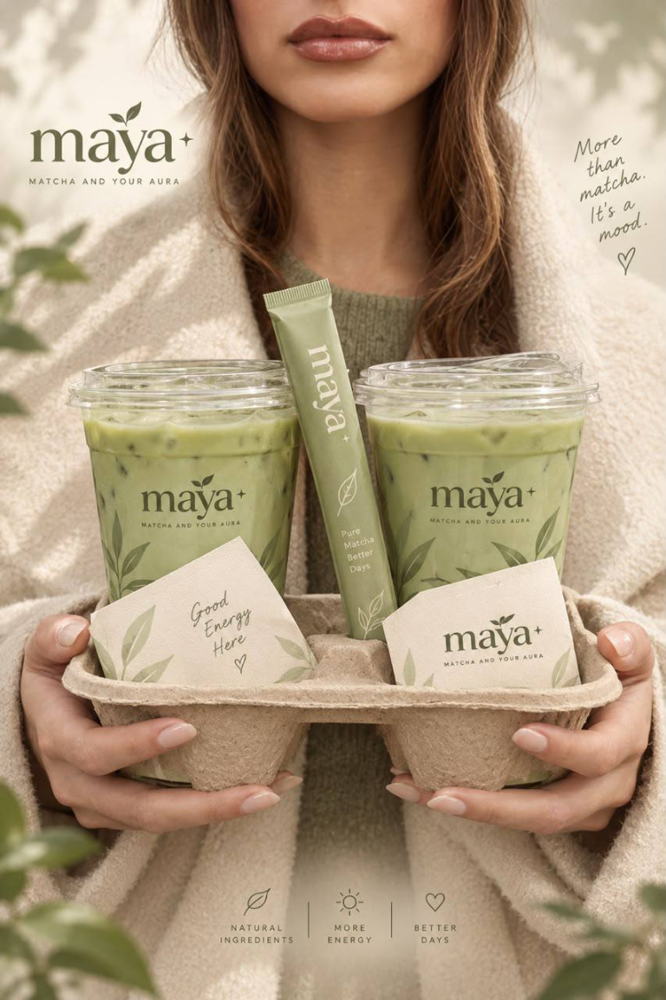

We Select
We choose leaves with vibrant color and rich flavor.
OUR STORY

A SIMPLE BEGINNING
Maya was created to reimagine matcha in a fresh, welcoming way. We believe natural ingredients, careful preparation, and thoughtful presentation create a complete experience.
We serve refreshing drinks and premium matcha powders, with choices for adventurous guests and those who prefer a softer flavor.
We choose leaves with vibrant color and rich flavor.
We whisk smoothly to create a creamy texture.
We balance the flavor and serve it in Maya's signature style.